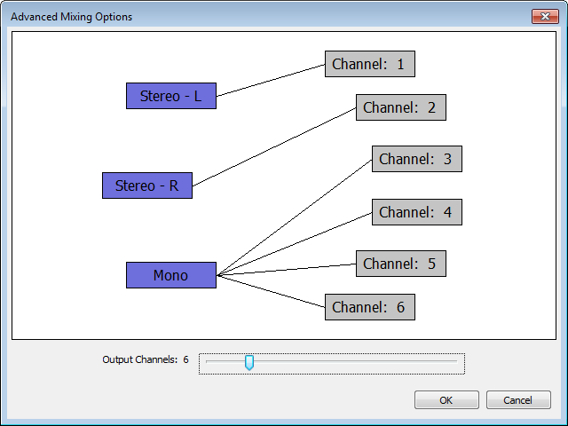

Advanced Mixing Options
The Advanced Mixing Options dialog appears if you have chosen "Use custom mix" in the Import / Export section of Preferences. Use this dialog to export multi-channel (surround sound) files or to make customised assignments between Audacity tracks and the channels in the exported file.
- 
- When you click and have chosen the name and format of your exported file, this dialog appears which presents you with the number of tracks you have in your project and allows you to map these as desired to each of up to 32 output channels (WAV, AIFF or OGG) or 8 output channels (FLAC). AAC multi-channel export is subject to the FFmpeg encoder used, as described in our file formats comparison table.
- To include only specific tracks in the exported file, select those tracks then use , or mute the tracks you do not want to export.
- Currently there is no support for exporting multi-channel files when using .
The tracks from your project shown on the left will be mixed down into the output channels shown on the right:
- The tracks in your project are shown in blue boxes.
- The output channels are shown in gray boxes.
- Adjust the Output Channels slider as desired to change the number of output channels.
- Click to select or deselect any box. A selected box is outlined in red.
- Clicking to select a box when another is already selected will link the boxes if they are not linked, or remove the link if they are linked.
Connect the tracks to the channels in the way that you want, then click "OK" to export to the multi-channel file.
- There is no support at the moment for multi-channel playback of audio in Audacity - playback of a multi-channel file in Audacity will always be mixed down to stereo. Similarly, the and commands only mix down to mono or stereo.
- Audacity does not perform mapping of the channels in exported files to specific playback channels. Use the Audio Track Dropdown Menu or mouse drag on the Track Control Panel of tracks to move tracks up and down so they match the channel layout of the format you are exporting to. In addition, 5.1 files in OGG and AC3 formats are often FL, FC, FR, SL, SR, LFE.
| There is no guarantee that a sound device or any particular file will follow recommended channel mapping for the format. |